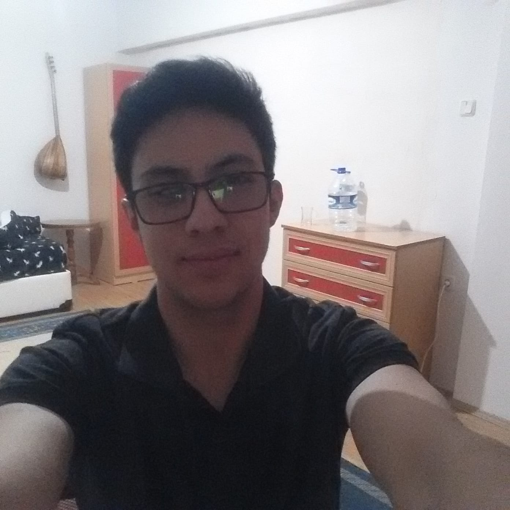
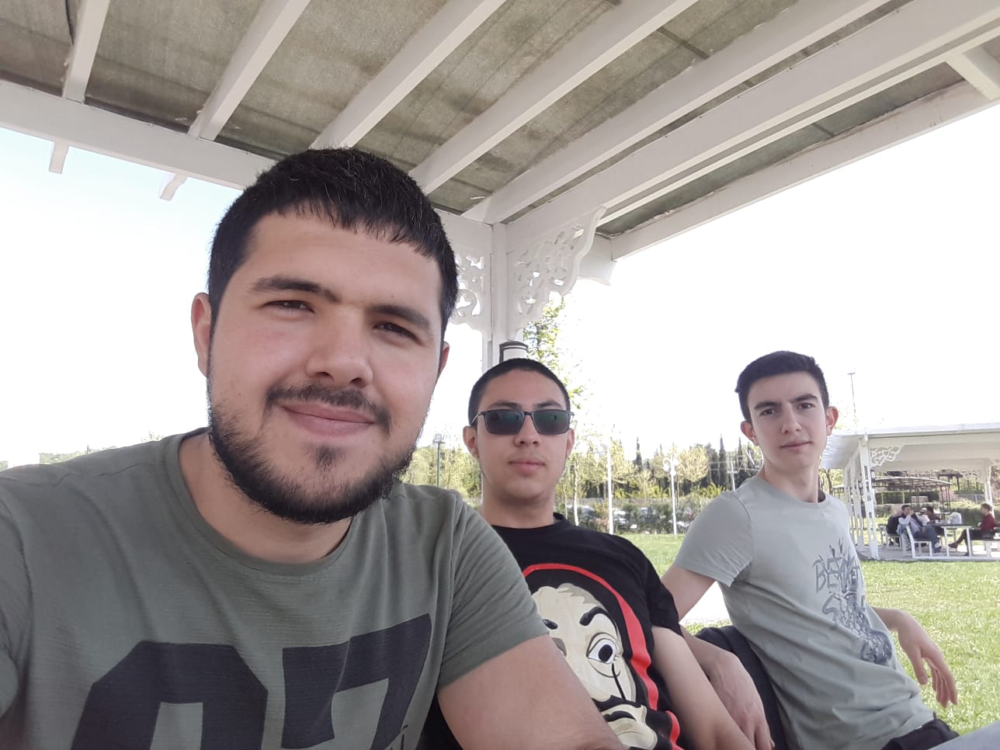

2000 yılı Şubat ayının yirmi üçüncü gününde öğretmen bir anne ve marangoz bir babanın ilk çocuğu olarak Tosya’da dünyaya gözlerimi açtım. Henüz on aylıkken başıma gelen talihsiz bir kaza sonucu bir gözümü kaybettim. İki yaşımdayken kız kardeşim dünyaya geldi. Altı yaşımda anaokuluna başladım. Anaokuluna bir sene devam ettikten sonra yedi yaşımda birinci sınıfa başladım. Bu sıralarda babam da kendi dükkanını açmış, kapı ve pencere üretiyordu. Hafta sonları ve sıkıldığım zamanlarda sözde yardım etmek için gidiyor ve dükkanda vakit geçiriyordum. Üçüncü sınıfa geldiğimde babam yaptığı bir işin parasını alamadığından zarar edip dükkanı kapatmak zorunda kaldı ve kısa süreli ekonomik sıkıntı yaşadık. Dördüncü sınıfın 1 Nisanı’nda erkek kardeşim dünyaya geldi. Ertesi yıl annemin mahallemizdeki okula tayin olmasıyla kız kardeşim ve ben de mahallemizdeki okula geçiş yaptık. Ortaokulu birincilikle bitirdim akabinde Kastamonu Fen Lisesi’ni kazandım. Burası hem ailemden ayrılmam hem de ailemin söylemiyle “iyi bir üniversite ve iyi bir hayat için ilk adım” olması sebebiyle hayatımın dönüm noktalarından biridir. Burada çok kıymetli öğretmenlerim ve arkadaşlarımla acı tatlı dört yıl geçirip güzel anılar biriktirdikten sonra üniversite sınavına girdim ve Sakarya Üniversitesi Bilgisayar Mühendisliği’ni kazandım. İlk sene İngilizce hazırlık okudum. Şimdi ise bilgisayar mühendisliği birinci sınıf öğrencisi olarak hayatıma devam etmekteyim.Yürüyüş yapmaktan, müzikten, kitap okumaktan, belgesel/dizi/film izlemekten ve ata binmekten hoşlanırım. Araba ve motosikletlere ilgliyim.
| |  |  | |